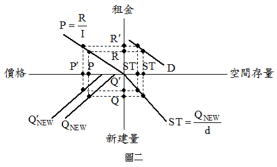

國土計畫法之實施對不動產市場之影響
國土計畫法將全國土地分為國土保育地區、海洋資源地區、農業發展地區及城鄉發展地區等四種，土地使用管制較以往更為嚴格。又辦理用地變更，申請使用許可，應向中央主管機關繳交「國土保育費」，另向直轄市、縣(市)主管機關繳交「影響費」，土地變更之回饋較以往更多。
茲運用住宅存量流量模型(stock-flow model)分析國土計畫法之實施對不動產市場之影響：
• (一) 住宅存量流量模型：如圖一所示，首先，在第一象限，假設短期住宅供給量固定（ST），由住宅空間需求決定租金水準（R）。其次，在第二象限，將租金水準以資本還原率（I）還原為住宅價格（P）。接著，在第三象限，由住宅價格與新建住宅成本（成本收入）決定新建住宅數量（QNEW）。最後，在第四象限，由新建住宅數量，減去原住宅存量之折舊數量（即d×ST，d代表折舊率），即得新增空間存量（△ST）。如△ST=0，則第一象限之空間存量不變；△ST>0，則第一象限之空間存量增加；△ST<0，則第一象限之空間存量減少。假定△ST=0，則連接ST、R、P與QNEW之虛線，形成均衡狀態。
[圖片1]
• (二) 國土計畫法之影響：實施國土計畫法，土地使用管制較以往更為嚴格，土地變更負擔較以往更為沉重，因此新建住宅成本提高，第三象限的QNEW向左平行移動至Q’NEW，如圖二所示。原有均衡狀態（速接R、P、Q與ST之虛線）改變為新的均衡狀態（連接R’、P’、Q’與ST’之虛線）。因此，市場租金由R上漲為R’，住宅價格由P上漲為P’，住宅新建量由Q減少為Q’，空間存量由ST減少為ST’。
[圖片2]
這篇文章考過哪些題目
讀完試著自己作答，再點進去對答案。依文字相似度自動比對，不一定完全對應。
- 104 高考《土地經濟學》第 2 題
明年即將實施房地合一實價課稅，請繪圖說明此稅制對不動產市場之影響。（25分） - 107 地特三等《土地經濟學》第 4 題
近年美國多次升息，預期未來可能還會持續升息，若國內中央銀行未來也開始升息，請繪圖說明升息對於國內住宅市場的租金、房價、新…
文章圖片

